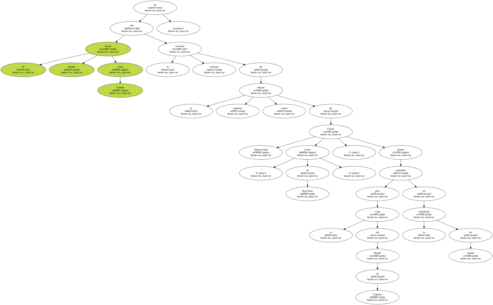
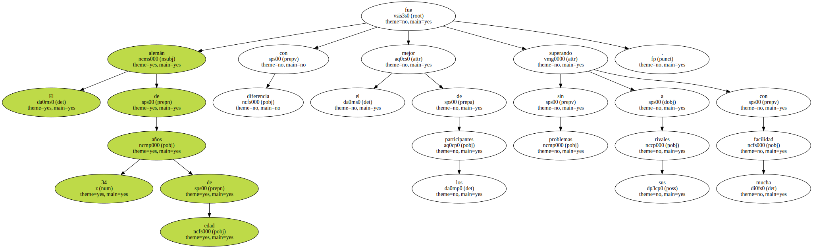
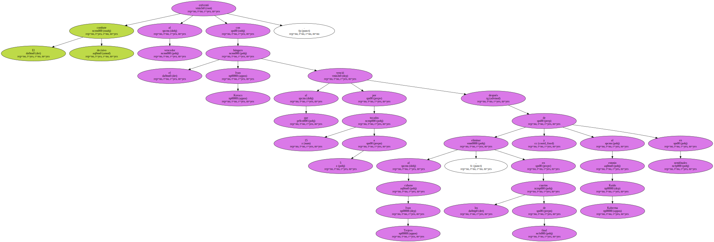
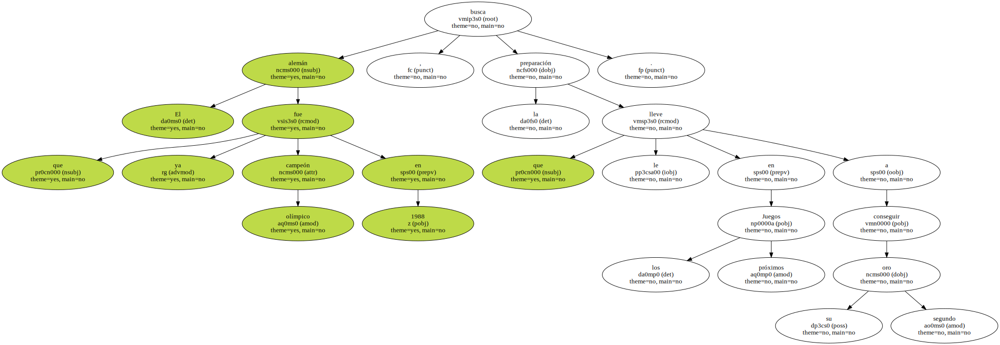

El tirador alemán Arnd Schmitt ha sido el brillante vencedor de la vigésima cuarta edición del Torneo Internacional " Ciutat de Barcelona " , prueba puntuable para la Copa del Mundo de Esgrima en la modalidad de espada.
El alemán de 34 años de edad fue con diferencia el mejor de los participantes superando sin problemas a sus rivales con mucha facilidad.
El combate decisivo enfrentó al vencedor con el húngaro Ivan Kovacs al que venció por 15 tocados a 5 después de eliminar al cubano Ivan Trejero , en los cuartos de final y al estonio Kaido Kaberma en semifinales.
Esta ha sido la primera prueba en la que participó Schmitt , después de ganar el campeonato del Mundo disputado en Seul el pasado año.

El alemán que ya fue campeón olímpico en 1988 , busca la preparación que le lleve en los próximos Juegos a conseguir su segundo oro.
El único español Eladio Araiz , que logró superar la fase de clasificación y entrar en el cuadro , quedó al final en la vigésima tercera posición , la última entre los finalistas , en un torneo en el que participaron las 30 primeras espadas del mundo.